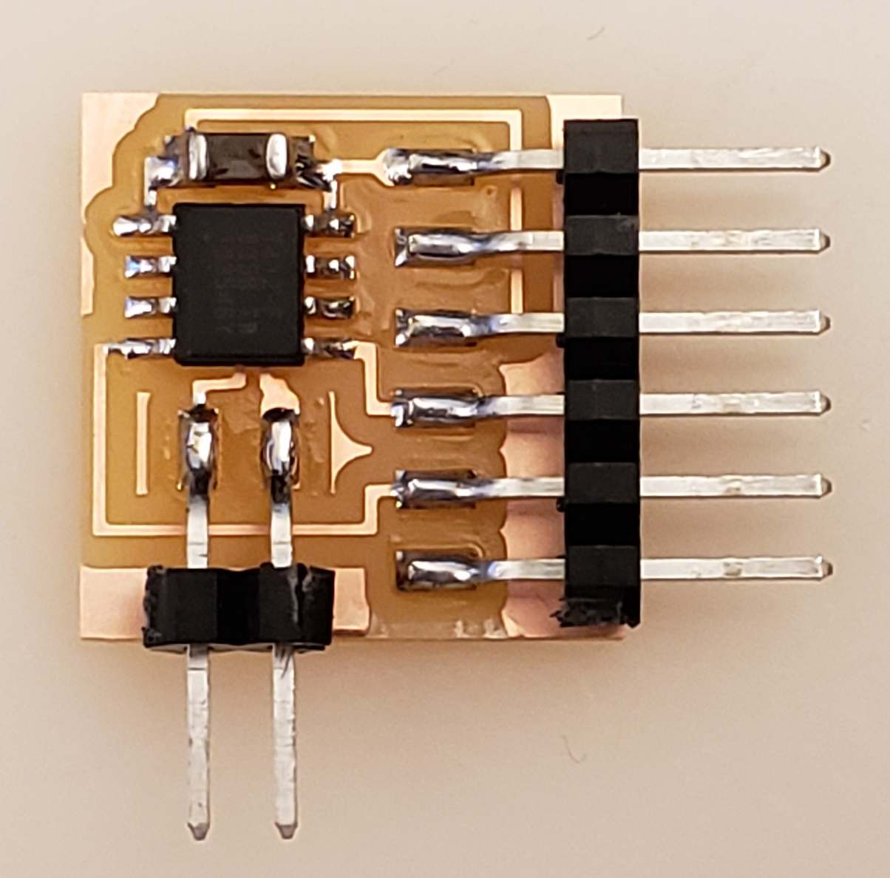
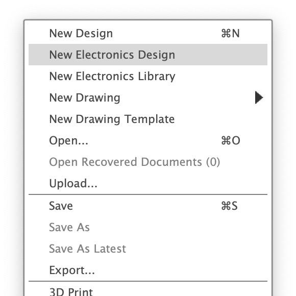
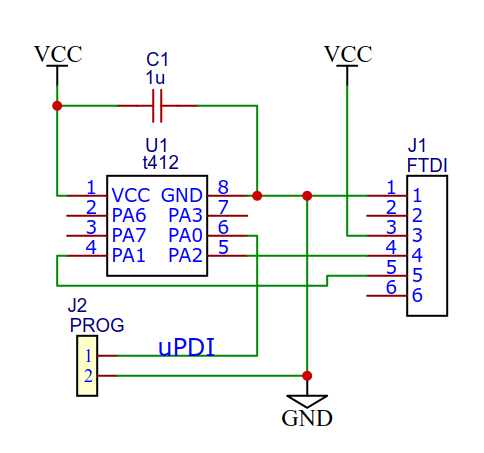
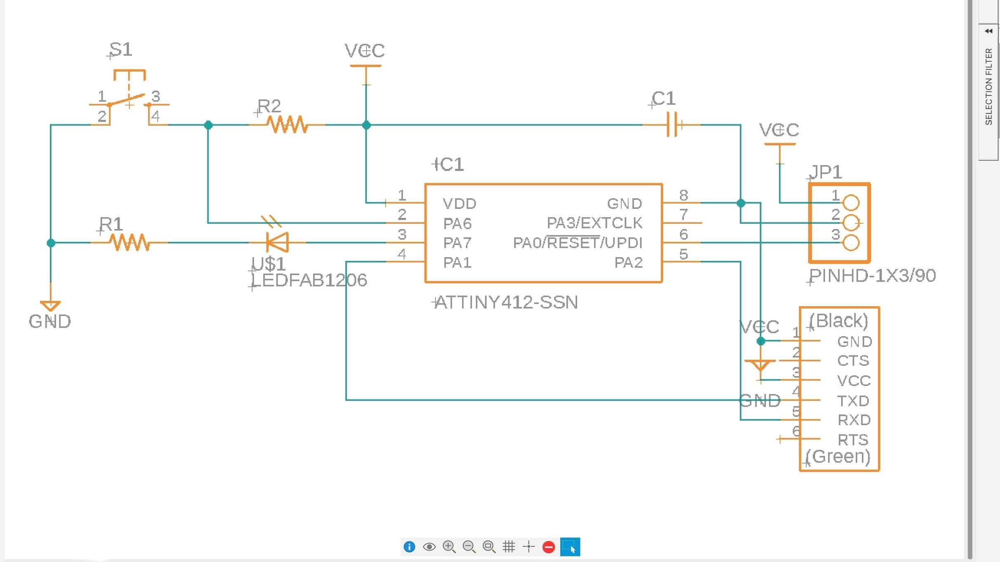
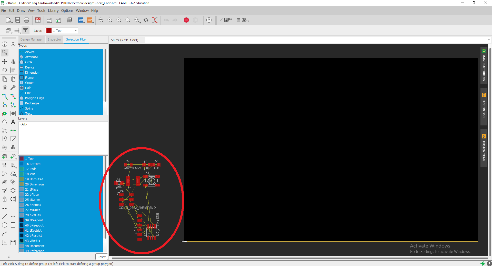
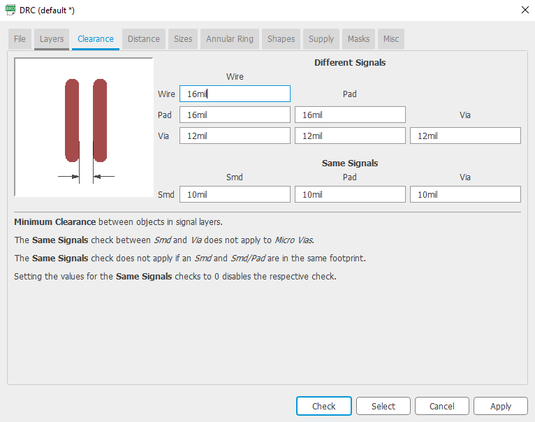
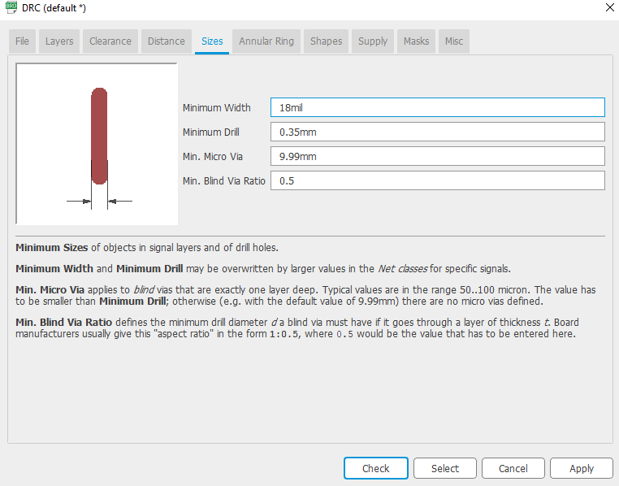
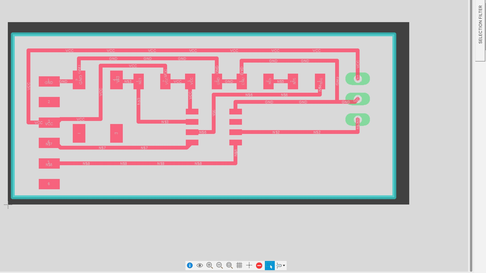
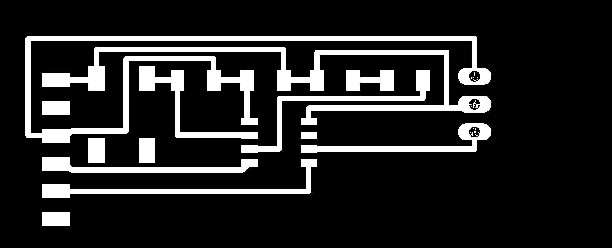
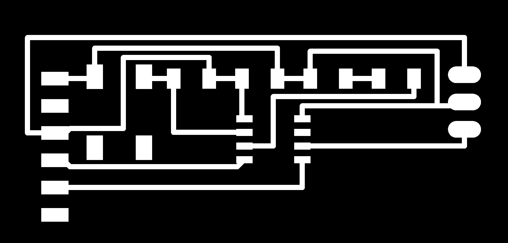

Designing PCBs
Continuing on from Electronic Production, we will now learn how to take an idea and turn it from a schematic design to an actual PCB.
What is an echo hello-world board?
An echo hello-world board gets its name from the "Hello world" program which is the first program that people write when first learning a new progamming language. Similarly, the echo hello-world board acts as the first board we will design when making our first programmable board. We will be using the ATtiny412 microccontroller for this project.
Assignments
- Redraw an echo hello-world board
- To add at least a button and an LED with current limitng resistor.
- Check the design rules: Electrical Rule Checking (ERC) and Design Rule Checking (DRC).
- Make it and test it.
Setting up Autodesk Fusion 360
- Download the fab library to have access to the ATtiny412 microccontroller schematic component.
- Under files in the top left corner, open "New Electronics Design". 
- Open "New Schematic" in the top left corner then under the "PLACE COMPONENTS" tab there is an "Open Library Manager". From there, click on "Import libraries" then "Import from local disk" and import in the fab library downloaded from step 1.
- Finally enable the fab library.
I will be referring to this schematic to redraw my echo hello-world board.
After placing the components with reference to schematic above along with the additional button, LED and current limiting resistor, we will press ERC under the VALIDATE tab to check for any errors with our schematic design. After we complete our new schematic design, it should look a little something like this :
After completing our schematic design, its time to generate our board. On the top left, we will click "Switch to PCB document". Upon first loading in, the components will all be on the side.
We will first start with setting up our DRC under the "RULES DRC/ERC" tab. We will adjust the "Clearance" and "Sizes".
|  |  |
With the help of the yellow guide line, organise and layout your board component. Switch the layer to 46 Milling and add an outline around the PCB. When completed it should look something like this.
After which, using the command "export image monochrome Users/(Username)/Downloads/(filename).png 2000" in the command box to export layers 1 Top & 17 Pads as well as 46 Milling respectively, we will get two images that looks like this:
|  |
note: command line syntax is for mac, for windows the syntax is as follow "export image monochrome (drive:\path\filename.png) (resolution)".
We will now need to use GIMP to fill in spaces in the pads as well in the outline.
|  |  |